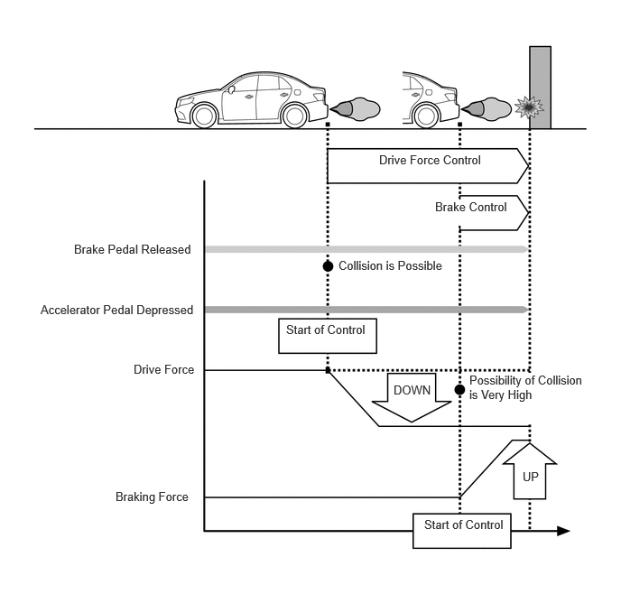
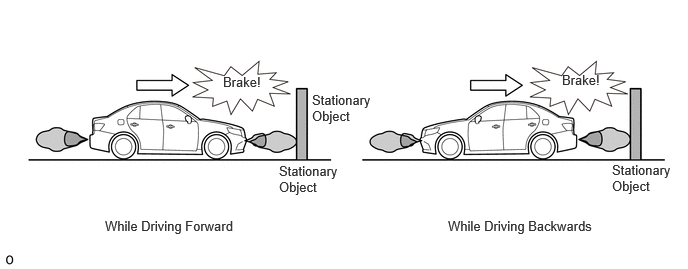
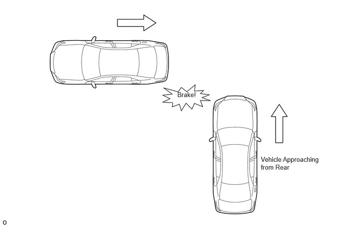
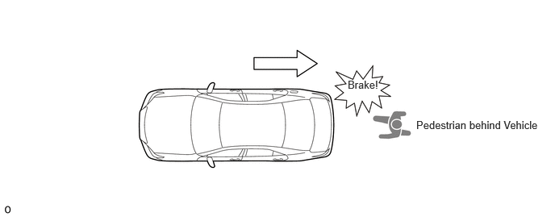
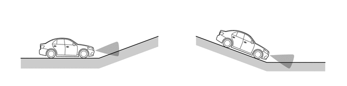

- When moving forward
- When moving rearward
| Last Modified: 10-07-2025 | 6.11:8.1.0 | Doc ID: NM100000002GLDA |
| Model Year Start: 2024 | Model: Tacoma | Prod Date Range: [12/2023 - ] |
| Title: PARK ASSIST / MONITORING: PARKING SUPPORT BRAKE SYSTEM: GENERAL; 2024 - 2026 MY Tacoma Tacoma HV [12/2023 - ] | ||
GENERAL
OUTLINE
(a) The parking support brake (PKSB) system helps to reduce collision damage by sounding an alarm*1, restricting drive torque, and operating brake control when the vehicle is moving forward or rearward and there is a possibility of contact with forward or rearward stationary objects, rear approaching vehicles*2, or rear pedestrians*3.
HINT:
*1: See the Intuitive Parking Assist System section and Blind Spot Monitor (BSM) System section regarding alarms.
*2: Models with rear cross traffic alert (RCTA)
*3: Models with rear camera detection
|
Target Object |
Static Objects |
Moving Vehicle |
Pedestrian |
|---|---|---|---|
|
Target Direction |
Front/rear of the vehicle |
Rear of the Vehicle |
Rear of the Vehicle |
|
(Reference) Operating Conditions Vehicle speed is 15 km/h (9 mph) or less |
|
When moving rearward |
When moving rearward |
|
*A |
Models with Rear Cross Traffic Alert (RCTA) |
*B |
Models with Rear Camera Detection |
|
*a |
Intuitive Parking Assist System Detection Range |
*b |
RCTA Detection Range |
|
*c |
RCD Detection Range |
*d |
Pedestrian Detection |
|
*e |
Vehicle Approaching from Behind Detection |
*f |
Stationary Object Detection |
|
*g |
This illustration is only for explanatory purposes. |
- |
- |
System Operation Image (Stationary Objects)
(b) Parking Support Brake (Forward or Rearward Stationary Objects, Surrounding Stationary Objects)
(1) When there is a possibility of a collision with a stationary object such as a wall while driving at a low speed, the drive force is suppressed and when the possibility of a collision is even greater, brake control is performed to reduce any potential.
Forward or Rearward Stationary Objects
(c) Parking Support Brake (Vehicles Approaching from Rear) (Models with Blind Spot Monitor System)
(1) When there is a possibility of a collision with a nearby vehicle while reversing, the drive force is suppressed and when the possibility of a collision is even greater, brake control is performed to reduce any potential damage.
(d) Parking Support Brake (Pedestrians behind Vehicle) (Models with Panoramic View Monitor System)
(1) When there is a possibility of a collision with any nearby pedestrians while reversing, the drive force is suppressed and when the possibility of a collision is even greater, brake control is performed to reduce any potential damage.
(e) During drive force suppression control and brake control operation, a warning is displayed on the multi-information display, multi display and headup display*, and the meter buzzer is sounded to notify the driver of the operation status.
- *: Models with headup display
(f) When brake control is performed, the meter buzzer sounds to notify the driver that an operation target is detected and the approximate distance to the operation target.
PRECAUTION
(a) In Order to Ensure Safe Operation of Parking Support Brake System
(1) Do not rely solely upon the parking support brake system. Doing so can lead to unforeseen accidents such as collisions with other vehicles.
- The driver is responsible for safe operation of the vehicle. The driver is responsible for safe operation of the vehicle. The parking support brake system may be able to reduce the severity of impacts, but the system may not function in some circumstances.
- The parking support brake system does not completely stop the vehicle. Even if the vehicle does stop, the brake pedal should be depressed immediately, as the system releases the brakes after approximately 2 seconds.
(b) Parking Support Brake System (Forward or Rearward Stationary Objects, Surrounding Stationary Objects) Precautions
(1) Make sure to observe the following precautions regarding the ultrasonic sensor. Failure to observe these precautions may result in incorrect ultrasonic sensor operation and may lead to an unforeseen accident. [1]
- Do not modify, disassemble or paint.
- Do not subject the ultrasonic sensor to impacts.
- Always keep ultrasonic sensors clean without damaging them.
- Contact the Toyota dealer when removal and installation or replacement of the front/rear bumper or grille is required.
- Do not install a license plate cover.
- Do not install any commercial accessories (backlit license plate, fog light, fender pole, wireless antenna, etc.) near sensors.
- Maintain appropriate tire pressure.
(2) Do not modify the vehicle suspension. Changing the vehicle height or tilt may prevent the ultrasonic sensor from correctly detecting stationary objects and may prevent correct operation or cause unnecessary operation of the system. [2]
(3) An impact applied to the ultrasonic sensor may damage the sensor and prevent it from operating normally. Have the vehicle inspected by your Toyota dealer.[3]
(4) When washing the vehicle in a high pressure car washer, do not allow water to make direct contact with the sensor area. The sensor may stop operating normally if subject to impact from high pressure water. [4]
(5) When washing the vehicle in a washer that uses steam, do not allow the steam to come too close to the sensor area. Steam may cause the sensor to stop operating normally. [5]
(6) In the following situations, turn off the parking support brake system. The system may operate even though there is no possibility of collision.
- When chassis rollers, the chassis dynamometer, or free rollers are used for a vehicle inspection.
- When moving while loading onto a ship or truck.
- When suspension has been lowered or tire with a different diameter than a genuine tire, etc. is installed.
- When the vehicle height changes significantly due to loading (nose up, nose down, etc.).
- When a towing hook is installed.
- When items [1] through [5] above are not followed.
(7) The parking support brake (stationary objects) detection range differs from that of the intuitive parking assist. As a result, even if the intuitive parking assist notifies the driver of an stationary object in the vicinity, the parking support brake (stationary object) operation may not have started.
(8) The following stationary objects may not be detected by the ultrasonic sensor.
- Objects that have difficulty reflecting sound waves, such as people, cotton, snow, etc. (some people may also not be detected due to their clothing).
- Objects that are not perpendicular to the ground or the traveling direction of the vehicle, rough or wavy objects.
- Short or low to the ground objects.
- Thin objects such as wire, fences, rope and sign posts etc.
- Objects extremely close to the bumper.
- Objects with sharp shapes.
- Objects that are tall and protrude toward the vehicle above the detection range of the sensors.
- Pedestrians.
(9) If the ultrasonic sensor detects an stationary object and brake control operates, as long as the parking support brake (stationary objects) has not been stopped, the meter buzzer will sound and notify the driver with a rough distance from the detected stationary object, regardless of the on/off condition of the intuitive parking assist.
(10) In the following conditions, the system may operate even though there is no possibility of collision.
- Effects of Surrounding Environment
- The vehicle is driving on narrow roads.
- The vehicle is driving on a bumpy road, slope, unpaved road or tall grass.
- The vehicle is driving towards banners or curtains, flags, hanging branches, breakers (such as railroad cross bars, parking barriers, etc.).
- The road surface has ruts or potholes.
- The vehicle is driving over a metal grating on a drainage channel.
- The vehicle is driving up a steep slope or downhill. 
- The ultrasonic sensor is covered by water on a flooded road.
- The vehicle is driving toward a high curb or the edge of a curb.
- The vehicle is driving near a pillar (H-section steel) in a parking structure or construction site.
- Effects of Weather
- The ultrasonic sensor is covered by ice, snow or dirt (returns to normal when the sensor is cleaned).
- The ultrasonic sensor is frozen.
- In severe weather such as fog, snow or a sand storm.
- Heavy rain or water is sprayed on the sensor.
- There is strong wind.
- Effects of Other Sound Waves
- The vehicle is in proximity to a source of ultrasonic waves, such as a vehicle horn or sensor system, motorcycle engine, large vehicle air brakes or clearance sonar on another vehicle.
- Vehicle Changes
- The vehicle height changes significantly due to loading (nose up, nose down, etc.).
- The ultrasonic sensor direction is displaced due to a shock.
- When vehicle driving is unstable due to an accident or malfunction.
- When using tire chains, an emergency tire or a puncture repair kit.
(11) Even if the parking support brake (stationary objects) mistakenly operates at a railroad crossing, etc., brake control is canceled after approximately 2 seconds, so it is possible to accelerate and exit the crossing. Also, brake control can be canceled by depressing the brake pedal, and the accelerator pedal can be depressed again to exit the crossing.
(12) The system may not operate normally in the following situations.
- Effects of Weather
- The area around the ultrasonic sensor becomes extremely hot or cold in blazing heat or freezing cold.
- Strong wind.
- The ultrasonic sensor is covered by ice, snow or dirt (returns to normal when the sensor is cleaned).
- The ultrasonic sensor is frozen.
- In severe weather such as fog, snow or a sand storm.
- Heavy rain or water is sprayed on the sensor.
- Effects of Surrounding Environment
- A stationary object that cannot be detected is present between an object that can be detected and the vehicle.
- A stationary object such as a vehicle, motorcycle, bicycle, pedestrian, etc. cuts in from the side of the vehicle or suddenly emerges.
- The vehicle is driving on a bumpy road, slope, unpaved road or tall grass.
- Effects of Other Sound Waves
- Proximity to a source of ultrasonic waves, such as a vehicle horn or sensor system, motorcycle engine, large vehicle air brakes or clearance sonar on another vehicle.
- Vehicle Changes
- The vehicle height changes significantly due to loading (nose up, nose down, etc.).
- The ultrasonic sensor direction is displaced due to a shock.
- A towing hook, bumper protector, bumper trim, bicycle carrier, snow-removal device, etc. is installed near the sensor.
- When vehicle driving is unstable due to an accident or malfunction.
- When using tire chains, an emergency tire or a puncture repair kit.
(c) Parking Support Brake System (Vehicles Approaching from Rear) Precautions (Models with Blind Spot Monitor System)
(1) Make sure to observe the following precautions regarding the blind spot monitor sensor. Failure to observe these precautions may result in incorrect blind spot monitor sensor operation and may lead to an unforeseen accident.
- Avoid strong impacts to the bumper around the blind spot monitor sensor.
- Do not disassemble the blind spot monitor sensor.
- Do not install accessories in the blind spot monitor sensor and the rear bumper near the blind spot monitor sensor and apply any sticker (including a transparent one) and aluminum tape.
- Do not modify the blind spot monitor sensor or the rear bumper around the blind spot monitor sensor.
- Contact the Toyota dealer when removal and installation or replacement of the blind spot monitor sensor and rear bumper.
- When repairing the paint of the rear bumper, only use Toyota genuine colors.
- Always keep the rear bumper around the sensor clean.
- This product conforms to electrical wave regulations in each country. The stamp on the surface of the product serves as proof of this. Do not remove it.
- Do not modify this product. Modifying it will invalidate the certification number.
(2) The detection range of the parking support brake (vehicles approaching from rear) differs from the detection range of the RCTA. As a result, even if RCTA notifies the driver of an stationary object in the vicinity, the parking support brake (vehicles approaching from rear) operation may not have started.
(3) The following types of vehicles and objects are not detected.
- Vehicles approaching directly to the rear.
- Vehicles reversing in a parking space next to the vehicle.
- Vehicles that the blind spot monitor sensor cannot detect due to the presence of an stationary object.
- Vehicles suddenly accelerating or decelerating near this vehicle.
- Stationary objects such as guardrails, walls, signs, parked vehicles, etc.*
- Small motorcycles, bicycles, pedestrians, etc.*
- Vehicles that are moving away from the driver's own vehicle.
- Vehicles approaching from a parking space next to the vehicle.*
- The distance between the blind spot monitor sensor and an approaching object is too close.
- Vehicles approaching from the right or left at the rear of this vehicle with a speed less than approximately 8 km/h (5 mph).
- Vehicles approaching from the right or left at the rear of this vehicle with a vehicle speed more than approximately 56 km/h (35 mph).
HINT:
*: The blind spot monitor sensor may detect the vehicles and objects described above depending on the situation.
(4) When the parking support brake system is not stopped and brake control operates, the buzzer sounds to warn the driver, regardless of whether the RCTA is on or off.
(5) In the following conditions, the system may operate even though there is no possibility of collision.
- Vehicles driving on a road facing the parking area.
- Moving objects that are making turns near the vehicle.
- Vehicles passing alongside the vehicle.
- There is a metal object that easily reflects radio waves to the rear (such as a guardrail, wall, sign or parked vehicle).
- Water is spraying directly onto the blind spot monitor sensor (from a sprinkler, etc.).
- A rotating object such as an exterior unit is near the vehicle.
- Vehicle is near guardrails, walls, etc., and these objects have entered the detection range.
- Moving objects (such as flags, exhaust gas, large drops of rain, large snowflakes, rainwater on roads, etc.).
- Grating, ditches and gutters.
- A lowered suspension or tire with a different diameter than a genuine tire, etc. is installed.
- The vehicle height drastically changes (such as nose up, nose down, etc.).
- In blazing heat or freezing cold.
(6) The system may not operate normally in the following situations.
- Situations that the blind spot monitor sensor
cannot detect correctly are as follows.
- In blazing heat or freezing cold.
- Ice, snow or mud is attached to the rear bumper.
- An approaching vehicle is obstructed from the blind spot monitor sensor by a neighboring vehicle, etc.
- A lowered suspension or tire with a different diameter than a genuine tire, etc. is installed.
- An extreme change in vehicle height (such as nose up, nose down, etc.).
- A commercial accessory (backlit license plate, fog light, fender pole, wireless antenna, etc.) or sticker is installed near the blind spot monitor sensor.
- The axis of the blind spot monitor sensor is misaligned (due to reinstallation, collision, etc.).
- Multiple vehicles come close consecutively over a short period of time.
- Rapidly approaching vehicles.
- The vehicle is being driven through puddles or on wet roads during bad weather, such as heavy rain, snow or fog.
- An accessory such as a bicycle carrier or towing hook is attached to the vehicle rear.
- Difference in height between other vehicles entering detection range and vehicle is too large.
- Situations and objects that the blind spot
monitor sensor may not detect are as follows.
- Other vehicles are approaching from behind while the vehicle is at an angle.
- The vehicle is turning.
- The vehicle is reversing on slopes with extreme changes in gradient.
- Other vehicles are approaching while they are turning.
- The vehicle is departing from a diagonal parking space.
(d) Parking Support Brake System (Pedestrians behind Vehicle) Precautions (Models with Rear Camera Detection)
(1) The detection range of the parking support brake (pedestrians behind vehicle) differs from the detection range of the RCD. As a result, even if the RCD notifies the driver of a stationary object in the vicinity, the parking support brake (pedestrians behind vehicle) operation may not have started.
(2) Cases when System does not Operate Normally
- Pedestrians that the system cannot detect
correctly
- Pedestrians who are crouching.
- Pedestrians who are stooping or squatting.
- Pedestrians who are running.
- Pedestrians who suddenly appear from the shadow of the vehicle or a building.
- Pedestrians who are riding moving objects such as a bicycle, skateboard or Segway.
- Pedestrians wearing a raincoat, long skirt, etc., making the outline of their body indistinct.
- Pedestrians at night and pedestrians whose clothing resembles the color of their surroundings.
- Pedestrians partially obscured by a cart, luggage, etc.
- Situations that the system cannot detect
correctly
- Bad weather (rain, snow, fog, etc.).
- Damaged or dirty lens (dirt, snow-melting agent, etc.)
- Backlight (direct sunlight, sunlight reflected off the road surface, headlights of other vehicles, etc.).
- Difference in brightness (near open shutters in a garage or underground parking area).
- The camera is not in the right position or facing the right direction.
- A tow hook is installed.
- Water drops are moving over the camera lens.
- The vehicle height drastically changes (such as nose-up, nose-down).
- Objects and situations that may cause incorrect
operation
- Solid objects (pillars, pylons, fences, parked vehicles, etc.).
- Moving objects (such as passing vehicles, motorcycles, etc.).
- Moving objects (such as flags, exhaust gas, large drops of rain, large snowflakes, rainwater on roads, etc.).
- Patterns on roads (white lines, pedestrian crossings, stones, streetcar rails, repaired areas, fallen leaves, gravel, etc.).
- Grating, ditches and gutters.
- The sides of the road and areas with differences in height.
- Surrounding objects reflected off puddles or wet road surfaces.
- Shadows.
- There are changes in gradient.
- An extreme change in vehicle height (such as nose up, nose down, etc.).
- A towing hook is installed.
- Water drops are moving over the camera lens.
- The camera is dirty (dirty, snow-melting agents, etc.).
- There are blinking lights (such as hazard warning lights).
- The camera is not in the right position or facing the right direction.
(e) Camera Handling Precautions
(1) Make sure to observe the following precautions for the camera. Failure to observe these precautions may result in incorrect camera operation and may lead to an unforeseen accident.
- Always keep the camera clean without damaging it.
- Do not attach accessories or stickers to the camera.
- Do not subject the camera to strong impact.
- Do not disassemble, modify or paint the camera.
- Do not drive the vehicle with the back door left open.
- Install only genuine suspensions and tires of the same size as genuine products.
- Do not install any commercial accessories (backlit license plate, fog light, etc.) near the television camera assembly.
- Do not install any commercial protective parts (bumper trim, etc.) to the rear bumper.